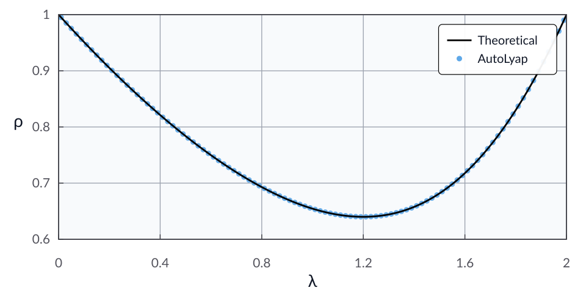

The Douglas–Rachford method: Maximally monotone/Lipschitz + strongly monotone
Problem setup
Consider the monotone inclusion
where:
\(G_1 : \calH \to \calH\) is monotone and \(L\)-Lipschitz continuous, with \(L>0\),
\(G_2 : \calH \rightrightarrows \calH\) is \(\mu\)-strongly monotone and maximally monotone, with \(\mu>0\).
For an initial point \(x^0 \in \calH\), step size \(\gamma \in \reals_{++}\), and relaxation \(\lambda \in \reals\), the Douglas–Rachford update is
In this example, we search for the smallest contraction factor \(\rho\in[0,1)\) provable using AutoLyap such that
where
Model the problem in AutoLyap and search for the smallest rho
\(G_1\) is modeled as an intersection of
MaximallyMonotoneandLipschitzOperator.\(G_2\) is modeled by
StronglyMonotone.The full inclusion is built with
InclusionProblem.The update rule is represented by
DouglasRachford.Distance-to-solution parameters are obtained with
IterationIndependent.LinearConvergence.get_parameters_distance_to_solution.The contraction factor is searched with
IterationIndependent.LinearConvergence.bisection_search_rho.
Run the iteration-independent analysis
This example uses the MOSEK Fusion backend (backend="mosek_fusion").
Install the optional MOSEK dependency first:
pip install "autolyap[mosek]"
import numpy as np
from autolyap import SolverOptions
from autolyap.algorithms import DouglasRachford
from autolyap.problemclass import (
InclusionProblem,
LipschitzOperator,
MaximallyMonotone,
StronglyMonotone,
)
from autolyap.iteration_independent import IterationIndependent
mu = 1.0
L = 1.0
gamma = 1.0
lambda_value = 1.2
problem = InclusionProblem(
[
[MaximallyMonotone(), LipschitzOperator(L=L)], # G1
StronglyMonotone(mu=mu), # G2
]
)
algorithm = DouglasRachford(gamma=gamma, lambda_value=lambda_value, type="operator")
solver_options = SolverOptions(backend="mosek_fusion")
# License-free option:
# solver_options = SolverOptions(backend="cvxpy", cvxpy_solver="CLARABEL")
# Build V(P, p, k) and R(T, t, k) for distance-to-solution analysis.
P, T = IterationIndependent.LinearConvergence.get_parameters_distance_to_solution(
algorithm
)
result = IterationIndependent.LinearConvergence.bisection_search_rho(
problem,
algorithm,
P,
T,
S_equals_T=True,
s_equals_t=True,
remove_C3=True,
solver_options=solver_options,
)
if result["status"] != "feasible":
raise RuntimeError("No feasible Lyapunov certificate in the requested rho interval.")
rho_autolyap = result["rho"]
def rho_theoretical(mu: float, L: float, lambda_value: float, gamma: float) -> float:
scaled_mu = gamma * mu
scaled_L = gamma * L
term1 = 2.0 * (lambda_value - 1.0) * scaled_mu + lambda_value - 2.0
term2 = scaled_L ** 2 * (lambda_value - 2.0 * (scaled_mu + 1.0))
denominator = np.sqrt(term1 ** 2 + scaled_L ** 2 * (lambda_value - 2.0 * (scaled_mu + 1.0)) ** 2)
condition_a_lhs = scaled_mu * (-term1 + term2) / denominator
if condition_a_lhs <= np.sqrt(scaled_L ** 2 + 1.0):
numerator_a = lambda_value + np.sqrt(
(term1 ** 2 + scaled_L ** 2 * (lambda_value - 2.0 * (scaled_mu + 1.0)) ** 2)
/ (scaled_L ** 2 + 1.0)
)
return (numerator_a / (2.0 * (scaled_mu + 1.0))) ** 2
threshold_b = (
2.0 * (scaled_mu + 1.0) * (scaled_L + 1.0)
* (scaled_mu + scaled_mu * scaled_L ** 2 - scaled_L ** 2 - 2.0 * scaled_mu * scaled_L - 1.0)
) / (
2.0 * scaled_mu ** 2 - scaled_mu + scaled_mu * scaled_L ** 3 - scaled_L ** 3
- 3.0 * scaled_mu * scaled_L ** 2 - scaled_L ** 2
- 2.0 * scaled_mu ** 2 * scaled_L - scaled_mu * scaled_L - scaled_L - 1.0
)
if (
scaled_L < 1.0
and scaled_mu > (scaled_L ** 2 + 1.0) / ((scaled_L - 1.0) ** 2)
and lambda_value <= threshold_b
):
return abs(1.0 - lambda_value * (scaled_L + scaled_mu) / ((scaled_mu + 1.0) * (scaled_L + 1.0))) ** 2
term3 = lambda_value * (scaled_L ** 2 + 1.0) - 2.0 * scaled_mu * (lambda_value + scaled_L ** 2 - 1.0)
term4 = lambda_value * (1.0 + 2.0 * scaled_mu + scaled_L ** 2) - 2.0 * (scaled_mu + 1.0) * (scaled_L ** 2 + 1.0)
numerator_c = (2.0 - lambda_value) * term3 * term4
denominator_c = 4.0 * scaled_mu * (scaled_L ** 2 + 1.0) * (
2.0 * scaled_mu * (lambda_value + scaled_L ** 2 - 1.0)
- (2.0 - lambda_value) * (1.0 - scaled_L ** 2)
)
return numerator_c / denominator_c
rho_theory = rho_theoretical(mu, L, lambda_value, gamma)
print(f"rho (AutoLyap): {rho_autolyap:.8f}")
print(f"rho (theory): {rho_theory:.8f}")
What to inspect in result:
result["status"]:feasible,infeasible, ornot_solved.result["solve_status"]: raw backend status.result["rho"]: certified contraction factor when feasible.result["certificate"]: Lyapunov certificate matrices/scalars.
The computed value rho (AutoLyap) matches (up to solver numerical tolerances)
the theoretical rate expression in
[RTBG20, Theorem 4.3], i.e.,
where
with
and
and
Sweeping over 100 values of \(\lambda\) on \(0 < \lambda < 2\) (with \(\mu=1\), \(L=1\), \(\gamma=1\)) gives the plot below, with the theoretical rate from [RTBG20, Theorem 4.3] in black and AutoLyap certificates as blue dots.
{kind=link}

References
Ernest K. Ryu, Adrien B. Taylor, Carolina Bergeling, and Pontus Giselsson. Operator splitting performance estimation: Tight contraction factors and optimal parameter selection. SIAM Journal on Optimization, 30(3):2251–2271, January 2020. doi:10.1137/19m1304854.